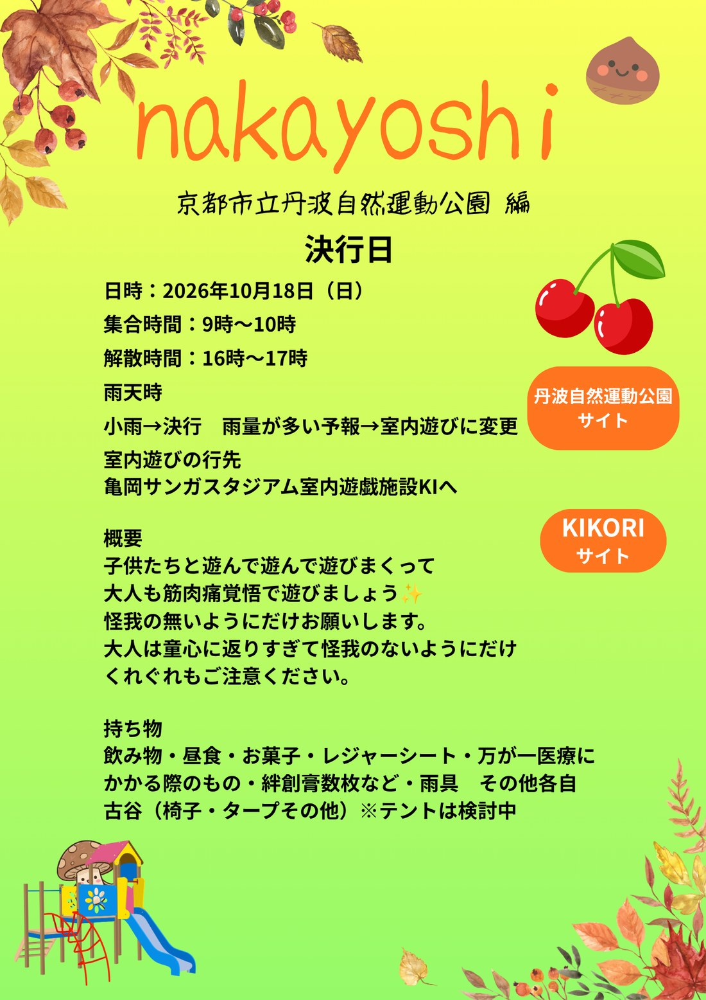
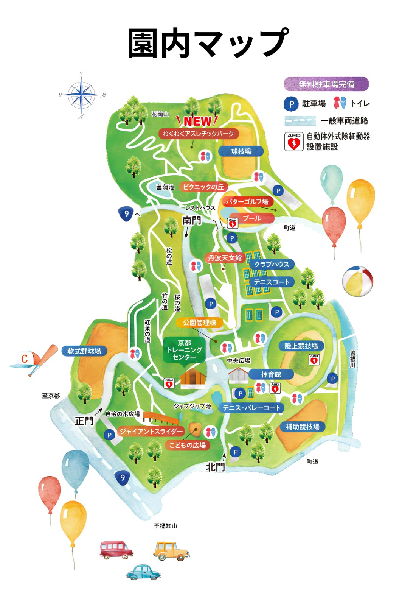
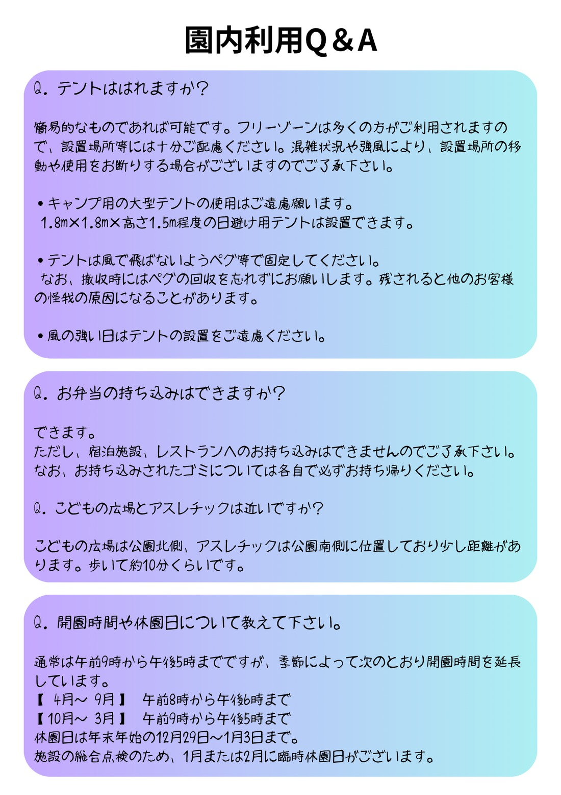

KIRInoko サイト
🍱
お弁当について本日10月18日はマルシェが開催されます。食べ物屋さんが沢山出店されますので、お弁当持参が無くても大丈夫です。
▼ 京丹波マルシェの案内・出店マップ
▼ 京丹波マルシェの案内・出店マップ

わくわくアスレチックパーク 球技場 ピクニックの丘 パターゴルフ場 プール 丹波天文館 クラブハウス テニスコート 軟式野球場 京都トレーニングセンター 陸上競技場 体育館 テニス・バレーコート 補助競技場 ジャイアントスライダー こどもの広場👆 施設名をタップすると、公園の公式ページが開きます

🍴 京丹波マルシェ2026
本日 10月18日(日)開催 ／ 会場は、遊びに来た丹波自然運動公園の「こどもの広場」です
日時 2026年10月18日(日)10:00〜15:00(雨天決行・荒天中止)
会場 京都府立丹波自然運動公園 こどもの広場
会場 京都府立丹波自然運動公園 こどもの広場
京丹波マルシェ2026、開催決定! 京丹波町の魅力「食」を発信するイベントです。京丹波町の農産物や特産品の魅力を広く発信し、町内外の交流人口を増加させるとともに、地域産業の振興、住民の誇りと愛着の醸成を図ることを目的としています。9月18日から11月8日まで開催の「第43回全国都市緑化フェア in 京都丹波」を盛り上げる、京丹波町内最大のイベントとして実施されます。
 京都府立須知高等学校幸田町物産展MADOIbio sweet's capocapo菓歩菓歩道の駅 瑞穂の里・さらびき丹波ワインハウスニコサンカフェそねっと今川農園りんご専門店ポムdeなっぷるパン工房conanel2番目のテーブル道の駅「和」笑楽×ピグレッツ焚き火カフェとお宿DANMOME京丹波栗工房古民家イタリアンgiggi無双心京丹波えだまめファーム農都なお道Kyotanba famer's kitchen Piglet'sトミータイヤキ道の駅「和」恵那川上屋四万十ドラマJR山陰本線(園部〜綾部)沿線地域公共交通活性化協議会明治安田京丹波町 教育委員会 社会教育課京丹波町移住相談窓口CLUB京丹波京丹波町観光協会京都中部広域消防組合 園部消防署 丹波出張所京都府南丹警察署京丹波森林組合全国都市緑化フェア京丹波みずほファーム
京都府立須知高等学校幸田町物産展MADOIbio sweet's capocapo菓歩菓歩道の駅 瑞穂の里・さらびき丹波ワインハウスニコサンカフェそねっと今川農園りんご専門店ポムdeなっぷるパン工房conanel2番目のテーブル道の駅「和」笑楽×ピグレッツ焚き火カフェとお宿DANMOME京丹波栗工房古民家イタリアンgiggi無双心京丹波えだまめファーム農都なお道Kyotanba famer's kitchen Piglet'sトミータイヤキ道の駅「和」恵那川上屋四万十ドラマJR山陰本線(園部〜綾部)沿線地域公共交通活性化協議会明治安田京丹波町 教育委員会 社会教育課京丹波町移住相談窓口CLUB京丹波京丹波町観光協会京都中部広域消防組合 園部消防署 丹波出張所京都府南丹警察署京丹波森林組合全国都市緑化フェア京丹波みずほファーム👆 地図の店名をタップすると、お店の案内ページ(または検索結果)が開きます。
参考図:京丹波マルシェ2026の会場MAPをもとに作成した画像です。正確なブース配置は、上の「出店マップ(PDF)」でご確認ください。
参考図:京丹波マルシェ2026の会場MAPをもとに作成した画像です。正確なブース配置は、上の「出店マップ(PDF)」でご確認ください。
🍴 飲食ブース
- 1京都府立須知高等学校検索
- 2幸田町物産展検索
- 3MADOI検索
- 4bio sweet's capocapo菓歩菓歩検索
- 5道の駅 瑞穂の里・さらびき検索
- 6丹波ワインハウス検索
- 7ニコサンカフェ検索
- 8そねっと検索
- 9今川農園検索
- 10りんご専門店ポムdeなっぷる検索
- 11パン工房conanel検索
- 122番目のテーブル検索
- 13道の駅「和」検索
- 14笑楽×ピグレッツ検索
- 15焚き火カフェとお宿DANMOME案内ページ
- 16京丹波栗工房検索
- 17古民家イタリアンgiggi検索
- 18無双心検索
- 19京丹波えだまめファーム検索
- 20農都検索
- 21なお道検索
- 22Kyotanba famer's kitchen Piglet's検索
- 23トミータイヤキ検索
- 37京丹波みずほファーム検索
🥐 ゲスト出店(地図では茶色の番号)
- 24道の駅「和」(京丹波町)検索
- 25恵那川上屋(岐阜県恵那市)検索
- 26四万十ドラマ(高知県四万十町)検索
🎪 物販・体験・ご案内
- 27JR山陰本線(園部〜綾部)沿線地域公共交通活性化協議会検索
- 28明治安田検索
- 29京丹波町 教育委員会 社会教育課検索
- 30京丹波町移住相談窓口検索
- 31CLUB京丹波ブース検索
- 32京丹波町観光協会案内ページ
- 33京都中部広域消防組合 園部消防署 丹波出張所検索
- 34京都府南丹警察署検索
- 35京丹波森林組合検索
🌳 全国都市緑化フェア関連
- 36全国都市緑化フェア案内ページ
店名をタップすると、「案内ページ」はそのお店・団体の案内ページへ、「検索」はお店の名前での検索結果へ移動します(公式サイトを確認できたものだけ、案内ページにしています)。